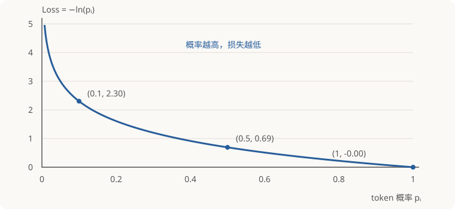
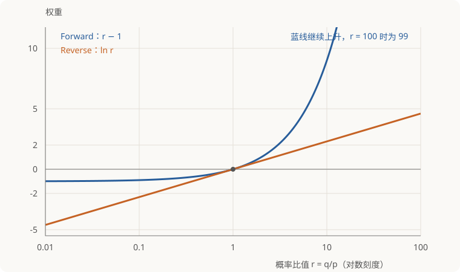

在 on-policy distillation（OPD）中，学生先生成自己的输出，老师再对这些输出给出训练信号。有些实现只使用实际抽中的 token，并把损失写成“一个权重乘以 SFT loss”：forward KL 的权重是 q/p，reverse KL 的权重是 log(q/p)。这些权重从哪里来，为什么求导时要固定，又为什么一些实现偏向 reverse KL？
从全词表的 KL 出发，先求完整梯度，再把求和改写成学生采样下的期望，就能逐步得到这两个公式。关键是：采样公式需要保证平均梯度正确，单次算出的 loss 数值无须等于完整 KL。
1. 符号与讨论范围
固定同一个上下文，词表有限，学生和老师在这个上下文下给出的概率分别记作 p 和 q：
| 符号 |
含义 |
| pi |
学生给第 i 个 token 的概率，依赖学生参数 |
| qi |
老师给第 i 个 token 的概率，老师不参与训练 |
| a∼p |
学生抽中的 token，Pr(a=i)=pi |
| ∇ |
对学生参数求梯度 |
下文统一使用自然对数，并假设所有 pi,qi>0。这覆盖有限 logit、未截断的 softmax 分布，也使概率比值和对数都有定义。讨论的是用当前学生分布采样后，在同一参数位置计算的一次更新梯度；上下文本身视为固定。
本文约定 forward KL 为 DKL(q∥p)，reverse KL 为 DKL(p∥q)。这里的 p 始终表示学生，q 始终表示老师；阅读不同资料时，需要先确认各自的符号约定。
1.1 先区分两层选择：采样前缀，还是采样下一 token
学生先生成一条回答，例如 A → B → C。这条路径提供三个前缀：原始 prompt、prompt + A、prompt + A + B。无论使用全词表还是 sampled-token loss，都可以只在这些已经采样到的前缀上训练。 全词表不意味着遍历其他回答路径。
到了一个固定前缀，才有第二层选择：下一 token 的损失怎么算？
- 全词表（full-vocabulary）：使用这个前缀下所有 token 的师生概率，求完整的 KL。
- 采样 token（sampled-token）：按学生分布抽到一个 token a，只用 pa,qa 构造梯度估计。
因此，on-policy 描述的是数据是否由当前学生生成，full-vocabulary / sampled-token 描述的是每个前缀下如何计算损失。全词表 OPD 同样可以是 on-policy。
1.2 同一个前缀，两种计算方式
设词表为 V。全词表计算直接使用
LF=i∈V∑qilogpiqi,LR=i∈V∑pilogqipi,然后直接对完整 KL 反向传播。例如词表只有 A、B，完整的 reverse KL 是
LR=pAlogqApA+pBlogqBpB.外面的 pA,pB 和对数里的 pA,pB 都随学生参数变化，求导时全部保留；教师的 qA,qB 固定。这个公式已经包含两个 token 对目标的贡献，直接求导就是完整 KL 的梯度，不需要加 sg。若把外面的学生概率固定，反而会漏掉乘积求导中的一部分。
全词表也会在乘积求导时出现两部分。对任意词表，完整 reverse KL 的梯度是
∇LR=i∑logqipi∇pi+对对数中的概率求导i∑pi∇logqipi.第二部分并没有被省略，而是在求和后变成零：
i∑pi∇logqipi=i∑pipi1∇pi=∇i∑pi=∇1=0.所以，全词表是正常求导后，由概率总和为 1 自动抵消这一部分，不需要用 sg 阻止求导。
而 sampled-token 若只抽到 A，使用的是专门构造的代理 loss：
LR(A)=sg(logpAqA)(−logpA).如果这个代理 loss 不固定权重，乘积求导会多出
(−logpA)∇logpAqA.它与完整 KL 中求和后为零的那一项不同，一般不能靠采样平均抵消。完整 KL 与采样代理 loss 是两个不同的表达式；前者直接求导，后者用 sg 保证产生正确的随机梯度。
它通过“固定权重 × SFT loss”产生一个随机梯度，其采样期望等于完整 KL 的梯度。这里的 sg 服务于代理 loss 的构造。全词表直接对完整 KL 求导；本文的采样方法则对固定权重的代理 loss 求导。
采样计算则抽取 a∼p，使用下文推导的代理 loss：
LF(a)=sg(qa/pa)(−logpa),LR(a)=sg(log(qa/pa))(−logpa).第 2、3 节先推导全词表梯度，再把它改写为采样估计；第 4、5 节的固定权重和减去基线，专门针对这种采样实现。
1.3 SFT loss：负对数概率与权重
对指定 token i，把 −logpi 称为它的 SFT loss（监督微调损失）；对学生参数求导得到 SFT 梯度 ∇θ(−logpi)。最小化这个损失会提高指定 token 的概率。

自然对数下，pi=0.1 时损失约为 2.30，pi=0.5 时约为 0.69，pi=1 时为 0。
w 表示乘在 SFT loss 前面的权重，本次求导时固定。 Forward 取 w=qi/pi，Reverse 取 w=log(qi/pi)。对加权损失 w(−logpi) 做梯度下降：
- 正权重（w>0）：提高指定 token 的概率。
- 负权重（w<0）：降低指定 token 的概率。
- 零权重（w=0）：不产生更新。
例如，指定 token 是“巴黎”，w=2 就推动模型提高“巴黎”的概率，w=−1 则推动降低。这里描述的是单个样本、足够小的一步更新；多个样本的梯度会合并。
OPD 中的指定 token 可以由学生自己采样；“SFT”在这里指负对数概率的计算形式，不要求它是人工标注的答案。
2. Forward KL：把老师加权改写成学生采样
2.1 从完整 loss 求梯度
全词表的 forward KL 为
LF=i∑qilogpiqi=老师固定，与学生参数无关i∑qilogqi+i∑qi(−logpi).因此，它的梯度是每个 token 的负对数似然梯度，乘以老师概率后求和：
∇LF=i∑qi∇(−logpi).2.2 从全词表梯度到采样 token 的梯度估计
学生抽中 i 的概率是 pi，而完整梯度按 qi 加权。给每项乘、除同一个 pi，即可把两者连接起来：
∇LF=i∑pi[piqi∇(−logpi)].外面的 pi 由学生抽样的频率提供。抽到哪个 token，就计算方括号里的梯度；在同一上下文、同一学生参数下重复采样，平均梯度便回到全词表的结果。这就是重要性采样：用 qi/pi 修正“按学生抽样”和“按老师加权”的差别。
记 sg(x) 为 stop-gradient：前向计算时取值等于 x，反向传播时将它视为常数。抽到 token a 后，可以使用代理损失
LF(a)=sg(paqa)(−logpa).固定权重后，它对学生参数的梯度恰好是所需的 (qa/pa)∇(−logpa)。
3. Reverse KL：为什么最后出现对数权重
3.1 外层概率也需要求导
全词表的 reverse KL 为
LR=i∑pilogqipi.外面的 pi 和对数里面的 pi 都依赖学生参数。用乘积求导法则，得到
∇LR=i∑[logqipi∇pi+pi∇logpi]=i∑[logqipi+1]∇pi.第二步使用了 pi∇logpi=∇pi。其中额外的 +1 不是凭空省略的；学生概率之和恒等于 1，所以
i∑∇pi=∇(i∑pi)=∇1=0.因此，+1 对应的部分在全词表求和后恰好为零，留下
∇LR=i∑logqipi∇pi.3.2 改写成“采样概率乘以加权 SFT 梯度”
利用 ∇pi=pi∇logpi，并同时翻转两个负号：
∇LR=i∑pilogqipi∇logpi=i∑pi[logpiqi∇(−logpi)].形式已经与 forward KL 一致：外面的 pi 仍由学生采样提供，每次只计算括号里的梯度。因此，reverse KL 的采样代理损失可以写成
LR(a)=sg(logpaqa)(−logpa).完整 loss 中的学生概率都正常参与求导；只在构造这个采样代理损失时，才把前面的对数比值固定。
4. Sampled-token 实现为什么要固定权重
Reverse KL 对应的单 token 采样梯度是
logpaqa∇(−logpa).为了让自动求导得到它，使用代理 loss：
LR(a)=sg(logpaqa)(−logpa).sg 保留权重的数值，但不对权重求导。 例如权重算出来是 2，本次就得到 2∇(−logpa)；下次再重新计算权重。
如果不加 sg，乘积求导会多出一项：
∇[logpaqa(−logpa)]=需要的梯度logpaqa∇(−logpa)+多出来的一项(−logpa)∇logpaqa.老师的 qa 固定，权重里的学生概率 pa 却仍依赖参数，所以额外项一般不为零。原始 KL 已经在第 3 节完整求导；这里固定权重，是为了让代码准确实现推导出的梯度。
直接把 log(pa/qa) 当作 loss 也不行。两种做法都用 SFT 梯度 ∇(−logpa) 表示，区别是：
正确的采样梯度：直接对对数比值求导：比较老师与学生log(qa/pa)∇(−logpa),∇log(pa/qa)=−∇(−logpa).正确采样梯度中的系数是 log(qa/pa)：老师给这个 token 的概率更高时，系数为正，推动学生提高概率；老师给的概率更低时，系数为负，推动学生降低概率；两者相等时，系数为零。
直接对 log(pa/qa) 求导，老师的 qa 是常数，求导后消失，SFT 梯度前的系数永远是 −1。因此，无论老师如何评价，都会沿降低抽中 token 概率的方向更新，不能实现所需的蒸馏更新。
例如，学生概率 pa=0.2：老师概率 qa=0.4 时，正确系数是 log2>0，应该提高学生概率；老师概率 qa=0.1 时，正确系数是 log0.5<0，应该降低学生概率。直接对对数比值求导，两个情况的系数却都是 −1。
代理 loss 的用途是让自动求导得到正确的训练梯度，不是计算 KL 的数值。 Reverse KL 使用 sg(log(qa/pa))(−logpa)，使采样梯度的期望等于完整 reverse KL 的梯度；Forward KL 使用 sg(qa/pa)(−logpa)，同样只对负对数概率求导。
5. Sampled-token Forward 权重减去 1 有什么意义
5.1 先看作用：让权重直接表示学生与老师的偏差
原始的 forward 权重是 qa/pa。假设学生已经与老师完全一致，即所有 token 都满足 pi=qi，这个权重仍然是 1。于是抽到 token a 后，单次梯度仍为
paqa∇(−logpa)=∇(−logpa).这是合理的随机梯度波动，但不代表还需要把这个 token 的概率提高。
当学生已经等于老师时，完整 KL 的梯度为零。可是不减去 1 的采样方法，每次只抽到一个 token，只看到它对应的那一项，所以仍可能产生非零更新。
例如学生和老师都认为：
抽到 A 就推高 A，抽到 B 就推高 B。这些更新在同一参数位置按各自的抽样概率取平均后恰好抵消，因此整体梯度仍为零。实际有限次更新则会在最优点附近波动。
减去 1 的好处正是在这里：当 p=q 时，权重 q/p−1=0，每一次更新都为零，消除了这种波动。
即使学生分布已经等于教师分布，不减去 1 的单样本梯度仍可能非零。这是采样噪声：其期望为零，而不是教师还要求提高该 token 的概率。
如果把权重改成 qa/pa−1，它就直接反映两者的偏差：
- qa>pa： 权重为正，推动学生提高这个 token 的概率。
- qa<pa： 权重为负，推动学生降低这个 token 的概率。
- qa=pa： 权重为零，这个样本不产生更新。
特别是当整个分布 p=q 时，每个样本的梯度都为零，不再只是平均梯度为零。这里说的提高或降低，是该样本单独做足够小的一步梯度下降时的方向；实际训练还会合并其他样本的梯度。
这也让它更方便与 reverse 权重 log(qa/pa) 比较：两者都在 qa/pa=1 时为零，在比值大于 1 时为正、小于 1 时为负。
| qa/pa |
Forward：qa/pa−1 |
Reverse：log(qa/pa) |
| 100 |
99 |
4.61 |
| 1 |
0 |
0 |
| 0.01 |
−0.99 |
−4.61 |
5.2 为什么减去 1 不改变平均梯度
减去 1，相当于从每个样本的原始梯度中减去一份 SFT 梯度：
(paqa−1)∇(−logpa)=paqa∇(−logpa)−∇(−logpa).关键在于：按学生分布采样时，被减去的这一项，其期望恰好为零。逐步展开：
Ea∼p[∇(−logpa)]=i∑pi∇(−logpi)=−i∑pipi1∇pi=−i∑∇pi=−∇(i∑pi)=−∇1=0.因此，修改后的平均梯度等于原平均梯度减去零：
Ea∼p[(paqa−1)∇(−logpa)]=Ea∼p[paqa∇(−logpa)]−Ea∼p[∇(−logpa)]=∇LF−0=∇LF.实现时，修改后的权重仍然需要固定：
LF,0(a)=sg(paqa−1)(−logpa).这种做法叫作减去一个常数基线。它改变单次样本的梯度，但不改变平均训练方向。 它消除了 p=q 时的采样梯度波动，不过并不保证在所有分布下都能降低方差。
6. Forward 与 Reverse：区分目标差异和采样差异
6.1 目标的差异：全词表计算中也存在
全词表下，Forward 与 Reverse 仍是两个不同目标：
Forward：按教师概率加权i∑qilog(qi/pi),Reverse：按学生概率加权i∑pilog(pi/qi).Forward 更关注教师概率较高、但学生概率偏低的 token，倾向于提高学生对这些 token 分配的概率。Reverse 更关注学生正在分配概率、教师却不认可的 token，倾向于压低这些输出。
例如教师认为 A、B 都合理，学生却主要生成 A。Forward 倾向于提高学生生成 B 的概率；Reverse 如果认为 A 已经得到教师认可，可能更倾向集中于 A。在学生能力受限、无法完全匹配教师时，这对应常说的 mode covering 与 mode seeking 倾向；不是对每个分布都成立的简单更新规则。
这种目标差异与是否采样下一 token 无关。 全词表直接优化这两个不同的 KL；本文的无偏采样估计则分别对应同样的两个目标。如果学生能够完全拟合教师，两者都在 p=q 取得最小值 0，差别主要在优化过程及无法完全拟合时的取舍。
6.2 采样方式的差异：罕见 token 的大权重
假设某个 token 的学生概率只有 p=0.001，老师概率却有 q=0.1。学生平均约每一千次抽样才遇到它一次；一旦抽中，forward 的原始权重为 100，减去基线后仍有 99，而 reverse 权重只有 log100≈4.61。
使用学生样本估计 forward KL 时，可能出现“多数时候没有抽到重要 token，偶尔抽到却带来很大梯度”的情况。对数权重缓和了 q/p 直接增长带来的极端更新。
Sampled-token Forward KL 对“教师概率高、学生概率低”的 token 可能产生较大的更新，因此在相同训练设置下可能带来更剧烈的策略变化。

横轴为概率比值 r=q/p（对数刻度）；蓝线为 Forward 权重 r−1，橙线为 Reverse 权重 logr。两条曲线在 r=1 时均为零。
全词表计算没有“罕见 token 这次没抽中、下次抽中后权重很大”的问题：每个 token 都参与求和。
6.3 对数概率差方便接入 RL 流程
先固定一个前缀，把下一 token 看成动作 a，学生分布 pθ(a) 看成策略。对不依赖学生参数的奖励 R(a)，最大化期望奖励的目标是
J(θ)=a∑pθ(a)R(a).利用 ∇pθ(a)=pθ(a)∇logpθ(a)，得到策略梯度：
∇J(θ)=a∑R(a)∇pθ(a)=a∑pθ(a)R(a)∇logpθ(a)=Ea∼pθ[R(a)∇logpθ(a)].RL 中也常用 advantage A(a) 代替奖励，表示动作相对基线的好坏。要用梯度下降实现这个上升方向，可以最小化采样代理 loss：
LPG(a)=−sg(A(a))logpθ(a),∇LPG(a)=−A(a)∇logpθ(a).现在把教师与学生的对数概率差作为本次固定的 token 级 advantage：
A(a)=logqa−logpa=logpaqa.代入同一个策略梯度代理 loss，就得到
LPG(a)=−sg(logpaqa)logpa=sg(logpaqa)(−logpa)=LR(a).这与第 3 节的 reverse KL 采样代理 loss 完全相同。这里的 A(a) 由当前学生概率计算，但本次反向传播必须固定；它的正确性由 reverse KL 的梯度推导保证，不能把它当作参数无关的奖励直接对整个期望求导。
因此，接入 RL 流程的关键很直接：保留“学生采样、计算 advantage、执行策略梯度更新”的结构，把 advantage 换成教师与学生的对数概率差。老师更认可的 token 得到正 advantage，学生过度生成的 token 得到负 advantage。
由此可以统一理解：在本文讨论的采样策略梯度形式下，RL 与 OPD 都可以用“固定权重 × SFT loss”产生训练梯度，区别是权重的来源。
| 训练方式 |
固定权重 wa |
采样代理 loss |
| 策略梯度 RL |
advantage A(a) |
sg(A(a))(−logpa) |
| Reverse-KL OPD |
log(qa/pa) |
sg(log(qa/pa))(−logpa) |
| Forward-KL OPD |
qa/pa，或 qa/pa−1 |
sg(wa)(−logpa) |
RL 的 advantage 来自奖励与基线，OPD 的权重来自教师和学生的概率比较。这里统一的是产生梯度的代理 loss；全词表 OPD 可以直接对完整 KL 求导，PPO 等方法还会加入新旧策略比值、裁剪等处理。
Thinking Machines 的 OPD 实现先记录学生生成 token 时的 log probability，再查询教师对相同 token 的 log probability，用“教师减学生”的差作为逐 token advantage，接入 RL 的 importance-sampling loss。
如果数据由旧学生 pold 采样，RL 代理 loss 可以写成
ρθ(a)=pold(a)pθ(a),LIS(a)=−ρθ(a)sg(A(a)).分母固定。在 θ=θold 时，ρθ(a)=1，且 ∇ρθ(a)=∇logpθ(a)，因此它的梯度也是 −A(a)∇logpθ(a)。这里的新旧学生比值用于修正采样策略；它与 Forward KL 中的教师／学生比值 qa/pa 是两个不同的比值。以上对应固定前缀下的单 token 更新；复用旧数据多步训练时，还要区分当前 advantage 与固定的旧 advantage。
7. 用两条轴理解 OPD
| 选择 |
决定什么 |
| 当前学生、旧学生或教师生成回答 |
训练访问哪些前缀，是否 on-policy |
| Forward KL 或 Reverse KL |
在这些前缀上优化什么目标 |
| 全词表或 sampled-token |
直接求完整梯度，还是用抽中的 token 估计梯度 |
学生生成一条回答后，每个位置都有一个已经确定的前缀。在这个前缀下，全词表方法计算所有候选 token 的师生概率并求和；sampled-token 方法只取学生实际生成的那个 token，计算它的加权损失。GKD 使用前一种方式，本文推导的采样代理 loss 使用后一种方式。
两种方法都可以沿同一条学生生成路径训练，区别在于每个位置使用整个词表，还是只使用抽中的 token。Forward 与 Reverse 决定优化目标；全词表与 sampled-token 决定怎样计算这个目标的梯度。